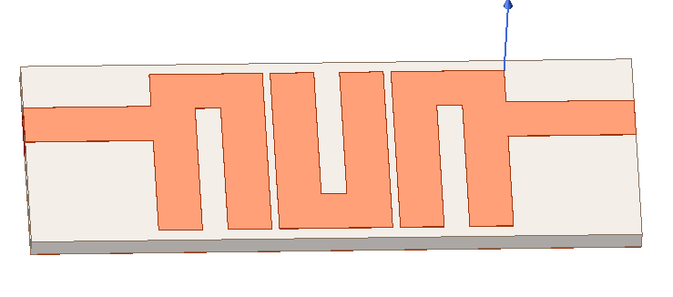
August 20, 2026
Project Sections
- 1. Introduction
- 2. Design Objectives and Specifications
- 3. Hairpin Filter Theory
- 4. Chebyshev Filter Synthesis
- 5. Initial Half-Wavelength Resonator Design
- 6. Folded Hairpin Resonator Design
- 7. Inter-Resonator Coupling Extraction
- 8. External Quality Factor Extraction and Tap Position Selection
- 9. Full-Filter Layout and Momentum EM Simulation
- 10. HFSS Full-Wave Validation
- 11. Final Comparison and Discussion
1. Introduction
Hairpin bandpass filters are a compact form of distributed microwave filter constructed from folded half-wavelength resonators. Rather than using straight parallel-coupled transmission-line sections, each resonator is folded into a U-shaped geometry, allowing a similar electrical length to occupy considerably less PCB area. This makes the topology attractive for microwave systems where both frequency selectivity and physical size are important.
The operating principle remains that of a conventional coupled-resonator bandpass filter. Energy is coupled from the input network into the first resonator, transferred between adjacent resonators, and finally coupled to the output. The required coupling strengths and input/output loading can therefore be determined from a conventional low-pass prototype and transformed into the desired bandpass response.
The folded geometry, however, introduces additional electromagnetic effects that are not completely captured by an ideal circuit-level representation. Resonator bends, open-end fringing, distributed coupling between adjacent arms, and unintended coupling between non-adjacent sections can all influence the final response. Consequently, analytical synthesis provides an initial design, while full-wave electromagnetic simulation is required to determine the final physical dimensions accurately.
In this project, a Chebyshev hairpin bandpass filter is designed using a combination of analytical synthesis, circuit simulation, and full-wave electromagnetic analysis. The required inter-resonator coupling coefficients and external quality factors are first calculated from the filter specifications. These electrical requirements are then translated into physical resonator lengths, coupling gaps, and input/output coupling geometry.
The design is subsequently refined through parametric simulations of the resonator length, inter-resonator spacing, and feed coupling. The resulting filter is analyzed using ADS and Momentum and independently modeled in HFSS to evaluate agreement between different simulation approaches. Finally, the sensitivity of the design to realistic manufacturing variations is investigated to assess its robustness and practical manufacturability.
The project therefore focuses not only on obtaining the desired frequency response, but also on understanding the relationship between classical filter synthesis and the physical electromagnetic behavior of coupled microstrip resonators.
2. Design Objectives and Specifications
The hairpin bandpass filter is designed for a center frequency of \(f_0=3\ \mathrm{GHz}\) with a fractional bandwidth of approximately 10%. The corresponding absolute bandwidth is therefore, \(BW=0.10f_0=300\ \mathrm{MHz}\), giving an approximate passband from \(f_L=2.85\ \mathrm{GHz}\) to \(f_H=3.15\ \mathrm{GHz}\).
A Chebyshev response is selected to obtain a relatively sharp transition between the passband and stopband while maintaining a moderate filter order. A three-pole implementation is initially selected, corresponding to three coupled hairpin resonators, and the system reference impedance is set to 50 Ω.
Based on the results of the previous distributed-filter designs, FR-4 is not used for this implementation. Although it is inexpensive and widely available, its relatively high dielectric loss introduces significant insertion loss and makes it less suitable for accurately evaluating a microwave resonator filter at 3 GHz. Instead, the hairpin filter is implemented on Rogers RO4350B, a low-loss hydrocarbon-ceramic laminate intended for high-frequency RF and microwave circuits. Rogers specifies a nominal dielectric constant of approximately 3.48 and a dissipation factor of approximately 0.0037 at 10 GHz.
Using a lower-loss substrate is particularly important for a hairpin filter because the signal energy is stored within several resonant structures before reaching the output. Dielectric and conductor losses therefore have a direct effect on resonator quality factor and overall passband insertion loss. The Rogers substrate should consequently provide a more realistic platform for investigating the intrinsic behavior of the hairpin topology without substrate loss dominating the response.
The initial design specifications are summarized below:
| Parameter | Design Target |
|---|---|
| Center frequency, \(f_0\) | 3 GHz |
| Filter response | Chebyshev |
| Filter order | 3 |
| Fractional bandwidth | 10% |
| Absolute bandwidth | 300 MHz |
| Approximate passband | 2.85–3.15 GHz |
| Passband ripple | 0.5 dB |
| Reference impedance | 50 Ω |
| Substrate | Rogers RO4350B |
| Relative permittivity, \(\varepsilon_r\) | 3.48 |
| Loss tangent, \(\tan\delta\) | 0.0037 |
These specifications define the desired electrical response for the initial filter synthesis. The Chebyshev prototype coefficients can then be used to determine the required inter-resonator coupling coefficients and input/output external quality factors, which will subsequently be translated into the physical dimensions of the hairpin structure.
3. Hairpin Filter Theory
A hairpin bandpass filter is a coupled-resonator filter in which each resonator is formed from a folded half-wavelength microstrip line. Electrically, the filter operates in the same manner as a conventional parallel-coupled resonator filter: each resonator stores electromagnetic energy near its resonant frequency, while controlled coupling between adjacent resonators transfers that energy through the filter.
The required filter response is therefore determined by three main quantities:
the resonant frequency of each individual resonator,
the coupling coefficient between adjacent resonators,
the external quality factor associated with the input and output coupling.
The analytical synthesis determines the required values of these quantities, while the physical hairpin geometry is adjusted so that its electromagnetic behavior produces them.
3.1 Coupled-Resonator Bandpass Filter
The design begins with a normalized low-pass prototype described by the coefficients
For a specified filter order, passband ripple, and fractional bandwidth, these coefficients determine the required coupling between neighboring resonators.
The fractional bandwidth is defined as
where \(f_H\) and \(f_L\) are the upper and lower passband frequencies and \(f_0\) is the center frequency.
For this design,
For a narrowband coupled-resonator filter, the required coupling coefficient between resonators i and i+1 can be approximated by
The input and output coupling are described by the external quality factors
and
For a symmetrical filter, the input and output external quality factors are equal.
These quantities provide the electrical design targets. The inter-resonator coupling coefficients determine the required spacing between adjacent hairpins, while the external quality factor determines how strongly the input and output transmission lines must couple to the first and last resonators.
3.2 Hairpin Resonator
Each hairpin resonator is approximately one half guided wavelength long at the desired center frequency:
The guided wavelength is
where \(\varepsilon_{eff}\) is the effective permittivity of the microstrip line.
Because part of the electromagnetic field propagates through the dielectric and part through the surrounding air, the effective permittivity is smaller than the substrate relative permittivity:
The resonator is folded into a U shape while maintaining approximately the same total electrical length.
Conceptually,
where \(L_{arm}\) represents the length of each vertical section and \(L_{base}\) represents the connecting section at the closed end of the hairpin.
This geometrical expression provides only a starting estimate. The actual resonant frequency is affected by several additional electromagnetic effects, including:
fringing fields at the open ends,
capacitance introduced by the bends,
coupling between the two arms of the same hairpin,
coupling to neighboring resonators,
finite conductor thickness and dielectric loading.
As a result, a resonator constructed using the analytical \(\lambda_g/2\) length will not necessarily resonate exactly at 3 GHz. The initial dimensions must therefore be refined using electromagnetic simulation.
3.3 Inter-Resonator Coupling
Adjacent hairpins are positioned close enough that their electromagnetic fields overlap. This interaction causes energy stored in one resonator to couple into the next.
The strength of this interaction is represented by the coupling coefficient \(k\).
For two identical coupled resonators, the coupling causes the original resonant frequency to split into two resonant modes at frequencies \(f_1\) and \(f_2\). The coupling coefficient can then be extracted from
The magnitude of \(k\) increases as the resonators are brought closer together. Therefore, the physical gap between neighboring hairpins becomes one of the principal design variables. A smaller gap generally produces stronger coupling, while a larger gap produces weaker coupling.
The required gaps can therefore be determined by simulating pairs of resonators at different separations, extracting \(k\) from the resulting resonant-frequency splitting, and comparing the result with the coupling coefficients obtained from the Chebyshev synthesis.
3.4 External Quality Factor
The first and last resonators must also be coupled to the 50 Ω input and output transmission lines. The strength of this coupling is represented by the external quality factor \(Q_e\).
A low value of \(Q_e\) corresponds to stronger external coupling, while a high value corresponds to weaker coupling.
In the hairpin geometry, \(Q_e\) can be controlled through parameters such as the feed-to-resonator gap or the position of the feed line relative to the resonator.
Therefore, \(S_f\rightarrow Q_e\), where \(S_f\) denotes the feed coupling gap.
Just as the resonator spacing is selected to reproduce the synthesized values of \(M_{ij}\), the feed geometry is selected to reproduce the required value of \(Q_e\).
3.5 Relationship Between Geometry and Filter Response
The main physical parameters of the filter can therefore be associated with specific characteristics of the frequency response:
| Geometrical Parameter | Primary Electrical Effect |
|---|---|
| Resonator length \(L_r\) | Center frequency |
| Resonator gap Sij | Inter-resonator coupling and bandwidth |
| Feed gap \(S_f\) | External Q and input/output matching |
| Resonator width \(W_r\) | Characteristic impedance and resonator behavior |
This relationship is central to the design process. Rather than adjusting all dimensions simultaneously, each parameter can first be studied independently through parametric sweeps. The resulting sensitivities provide an initial physical design that can later be refined using full-wave electromagnetic optimization.
The next step is therefore to perform the Chebyshev synthesis and calculate the numerical values of the required coupling coefficients and external quality factor for the 3 GHz, 10% bandwidth filter.
4. Chebyshev Filter Synthesis
With the center frequency, bandwidth, ripple, and filter order defined, the next step is to calculate the normalized low-pass prototype coefficients and use them to determine the coupling requirements of the three-resonator hairpin filter.
For this design,
with a third-order Chebyshev response and a passband ripple of
4.1 Chebyshev Low-Pass Prototype Coefficients
The Chebyshev prototype values gi can be calculated recursively rather than obtained from a tabulated set of values.
First, define
For a filter of order N,
The auxiliary coefficients are then defined as
and
The normalized prototype begins with
while the first element is
The remaining prototype coefficients are calculated recursively using
For an odd-order Chebyshev filter with equal source and load terminations,
For the present design,
and
The intermediate values are approximately
and
The ak coefficients become
Using the recursive equations gives
and
The resulting normalized low-pass prototype coefficients are therefore
| Coefficient | Value |
|---|---|
| g0 | 1.0000 |
| g1 | 1.5963 |
| g2 | 1.0967 |
| g3 | 1.5963 |
| g4 | 1.0000 |
The symmetry
is consistent with the symmetrical three-pole filter structure.
4.2 Inter-Resonator Coupling Coefficients
For a narrowband coupled-resonator bandpass filter, the required coupling coefficient between adjacent resonators is
For resonators 1 and 2,
which gives
Similarly,
giving
Therefore,
The two inter-resonator coupling gaps can therefore initially be chosen to be identical.
4.3 External Quality Factor
The coupling between the source and the first resonator is described by the input external quality factor, \(Q_{e,\mathrm{in}}=g_0g_1/FBW\).
Substituting the prototype values,
gives
Similarly,
and therefore
Thus,
and the input and output feed structures may also be designed symmetrically.
4.4 Synthesized Electrical Targets
The resulting electrical design targets are summarized below:
| Parameter | Required Value |
|---|---|
| \(M_{12}\) | 0.0756 |
| \(M_{23}\) | 0.0756 |
| \(Q_{e,\mathrm{in}}\) | 15.96 |
| \(Q_{e,\mathrm{out}}\) | 15.96 |
These values provide the link between the desired Chebyshev response and the physical hairpin geometry. The next stage is therefore to determine a hairpin resonator length that produces resonance near 3 GHz, followed by electromagnetic extraction of the resonator spacing required to achieve
and the feed geometry required to achieve
5. Initial Half-Wavelength Resonator Design
The physical design begins with a single half-wavelength microstrip resonator. The purpose of this stage is to determine the transmission-line width and resonator length corresponding to the 3 GHz design frequency, and to establish a circuit-level resonator model that can be tuned before the hairpin geometry and inter-resonator coupling are introduced.
The initial design is performed entirely in ADS using the microstrip transmission-line models and parameter-sweep capabilities.
5.1 Substrate Definition
The filter is implemented on Rogers RO4350B. The substrate is defined in ADS using an MSUB component with
and a copper thickness of
A copper conductivity of
is used.
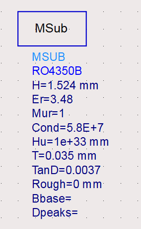
5.2 LineCalc Synthesis
ADS LineCalc is used to synthesize a 50 Ω microstrip transmission line with an electrical length of
180∘
at the design frequency
For the selected RO4350B substrate, LineCalc gives a microstrip width of
and a physical 180∘ length of
The corresponding calculated effective dielectric constant is
The synthesized dimensions provide the initial circuit-level estimate for the half-wavelength resonator.
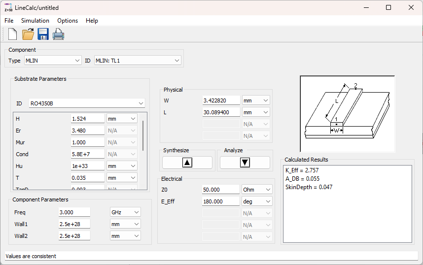
The 50 Ω, 180∘ microstrip synthesis at 3 GHz gives W=3.4228 mm and L=30.0894 mm.
5.3 Single-Resonator Test Circuit
The synthesized line is evaluated using the ADS circuit shown in Figure 5.3. The resonator consists of a single MLIN section with \(W=3.423\ \mathrm{mm}\) and \(L_r=\lambda/2\), where the initial value \(\lambda=60.18\ \mathrm{mm}\) corresponds closely to the LineCalc half-wave length.
Two MGAP discontinuities provide capacitive coupling between the resonator and the 50 Ω source and load. The two gaps are identical and are described by the parameter \(S_g\).
This structure provides a simple way to excite the resonator while allowing the coupling strength to be varied independently of the resonator length.
The S-parameter simulation covers \(1.5\ \mathrm{GHz}\le f\le4.5\ \mathrm{GHz}\) with a frequency resolution of 1 MHz.
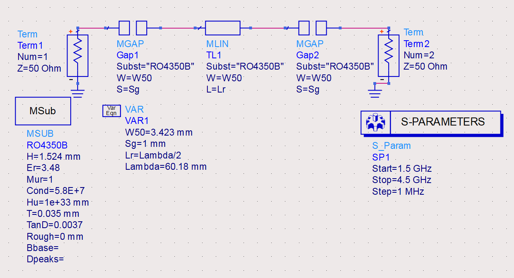
For an initial gap of \(S_g=1\ \mathrm{mm}\), the circuit produces a clear transmission resonance at \(f_r=2.875\ \mathrm{GHz}\) with \(S_{21}(f_r)=-11.496\ \mathrm{dB}\).
The resonant frequency is therefore lower than the 3 GHz value predicted by the isolated 180∘ LineCalc synthesis. The difference results from the loading introduced by the complete resonator test circuit, particularly the capacitive gap discontinuities.
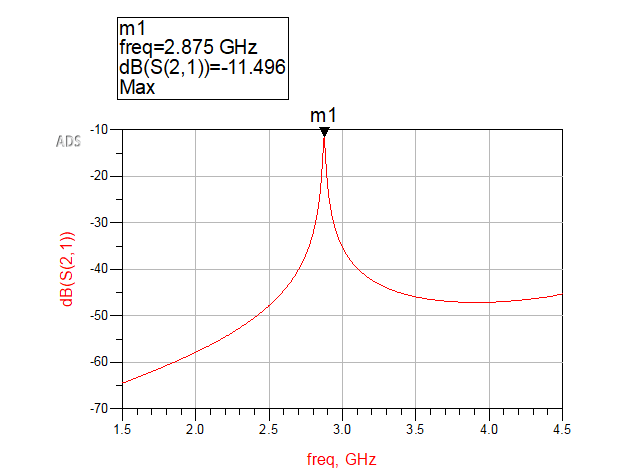
5.4 Coupling-Gap Selection
Before tuning the resonator length, the influence of the measurement coupling is examined by sweeping the two MGAP spacings simultaneously.
For each value of \(S_g\), two quantities are extracted from the simulated transmission response:
and
In the ADS Data Display, these are evaluated using
and
The transmission maximum decreases rapidly as the gap increases, demonstrating the expected reduction in capacitive coupling.
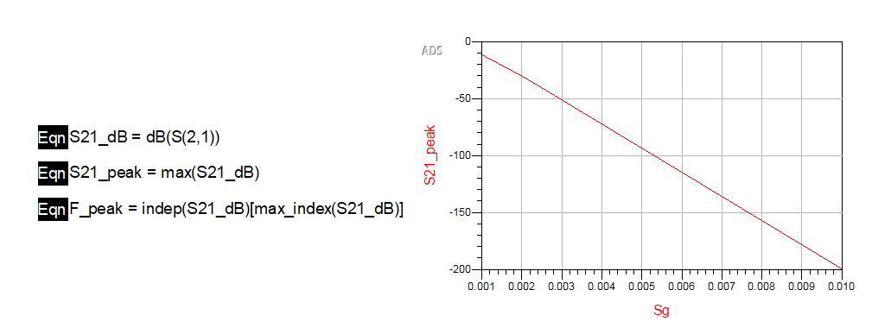
The extracted resonant frequency shows a different behavior. Between approximately \(S_g=2\ \mathrm{mm}\) and \(S_g=3\ \mathrm{mm}\), the measured resonance forms a plateau near 2.889 GHz even though the peak transmission continues to decrease considerably.
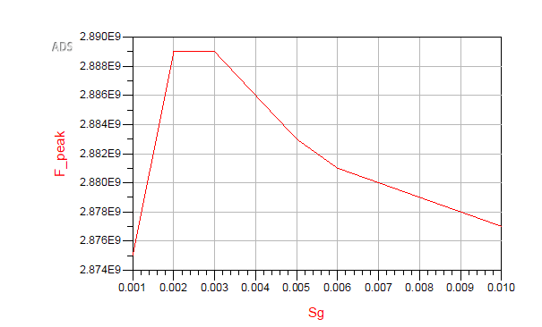
A value of \(S_g=2\ \mathrm{mm}\) is selected. At this point the resonant frequency is already within the weak-coupling plateau, while the transmission remains substantially stronger than for larger gaps. This provides a useful compromise between minimizing perturbation of the resonator and maintaining a clearly measurable \(S_{21}\) peak.
5.5 Resonator-Length Sweep
With the coupling gap fixed, the resonator length is varied to shift the fundamental resonance toward the required 3 GHz center frequency.
The ADS circuit uses the parameter \(L_r=\lambda/2\), so the swept variable \(\lambda\) represents twice the physical resonator length. An initial sweep over \(\lambda=50,\ 55,\ 60,\ 65,\ 70\ \mathrm{mm}\) shows a clear shift of the transmission resonance with resonator length.
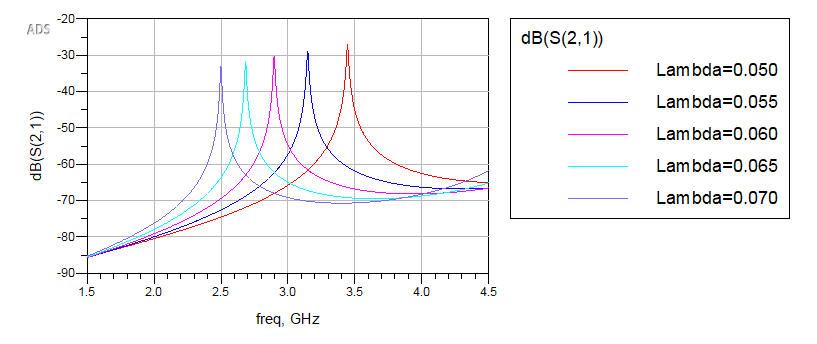
The extracted peak frequency follows the expected inverse relationship:
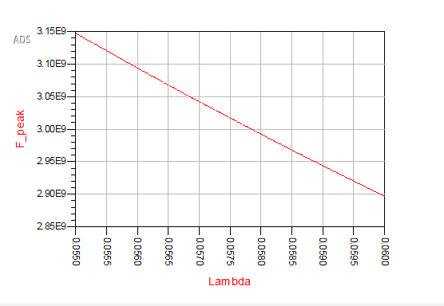
A finer sweep around the 3 GHz crossing gives \(\lambda=57.840\ \mathrm{mm}\) at \(f_r=3.000\ \mathrm{GHz}\). Since the physical resonator is defined as \(L_r=\lambda/2\), the tuned half-wave resonator length is \(L_r=28.920\ \mathrm{mm}\).
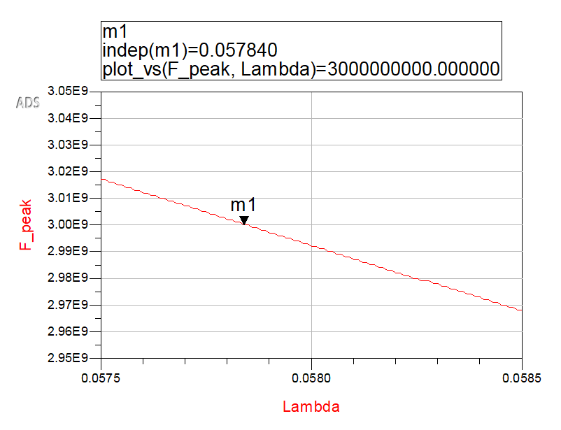
The circuit-level tuning therefore reduces the resonator length from the LineCalc value of
30.089 mm
to
28.920 mm,
a reduction of approximately 1.17 mm. This difference illustrates why the isolated 180∘ transmission-line synthesis serves as an initial estimate rather than the final resonator dimension: the coupling discontinuities and complete circuit environment alter the electrical loading of the resonator.
The resulting 28.920 mm resonator length defines the electrical starting point for the physical hairpin geometry and the subsequent coupled-resonator design.
6. Folded Hairpin Resonator Design
The straight half-wavelength resonator developed in the previous section provides the correct electrical length for a 3 GHz resonance, but it does not yet represent the physical geometry of a hairpin filter. The next step is therefore to fold the resonator into a U-shaped structure while preserving its resonant behavior.
The folded resonator is modeled directly in ADS using distributed microstrip elements. The two parallel arms are represented by an MCLIN section so that coupling between the arms is included in the circuit model. Two MCORN elements represent the 90° bends, and an MLIN section forms the base of the U-shaped resonator. The same weakly coupled MGAP fixture used in Section 5 is retained so that the resonant frequency can be observed without introducing the final filter feed structure.
The resonator geometry is defined by the arm length
\(L_a\),
the base length
Lb,
the resonator width
\(W_r\),
and the spacing between the two parallel arms
\(G_h\).
The nominal total resonator length is expressed as
A correction term,
dLa,
is added to both vertical arms so that
where La0 is the initial arm length obtained from the folded half-wave geometry.
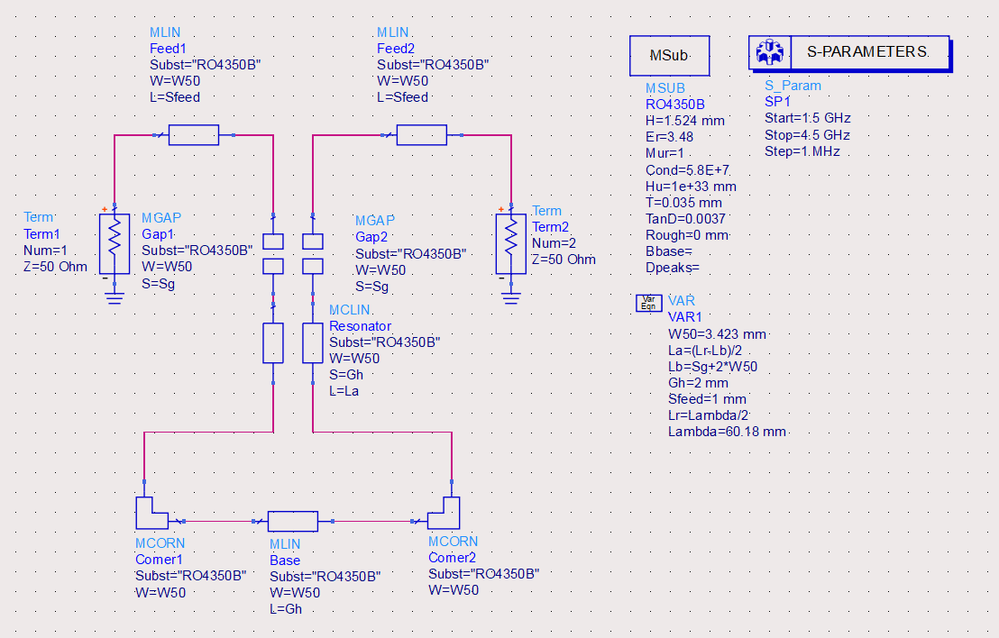
6.1 Initial Folded-Resonator Response
The initial folded geometry produces a resonant frequency substantially above the 3 GHz design target. The simulated transmission response shows a clear resonance near
This frequency shift indicates that directly folding the previously tuned straight resonator does not preserve the same electrical behavior. Coupling between the two parallel arms, the bend discontinuities, and the altered distributed capacitance and inductance of the U-shaped structure change the effective electrical length of the resonator.
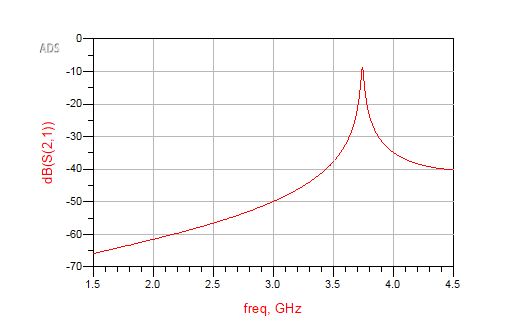
Because the resonance lies above the target frequency, the folded resonator is electrically too short. The arm length is therefore increased while the base length, strip width, arm spacing, and weak-coupling fixture remain fixed.
6.2 Arm-Length Tuning
The correction term dLa is swept in ADS while monitoring the transmission response. Since the same correction is applied to both vertical arms, increasing dLa increases the total resonator length by
The coarse parameter sweep shows the expected relationship
As the two arms are lengthened, the resonance moves progressively downward through the 3 GHz region.
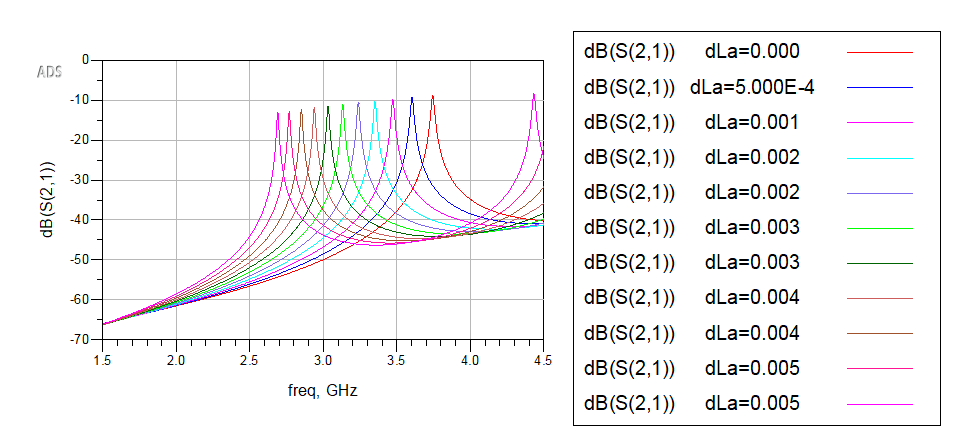
The coarse sweep identifies the region in which the resonator crosses the desired center frequency. A finer sweep is then performed around this transition and the frequency corresponding to the maximum value of \(S_{21}\) is extracted for each arm-length correction.
The extracted peak frequency is defined as
The fine sweep gives
at
and
at
The 3 GHz condition therefore lies approximately midway between the two points, giving
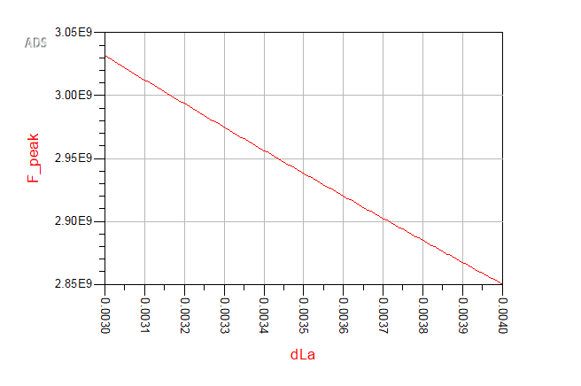
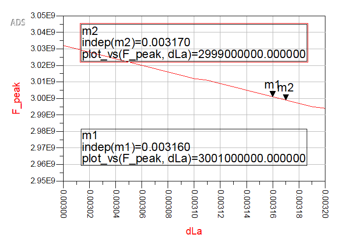
6.3 Tuned Folded Resonator
A final ADS simulation using
produces a transmission maximum at
The corresponding peak transmission is
The absolute transmission magnitude is not used as a filter-performance metric at this stage because the MGAP structures serve only as a weak excitation fixture. The important result is the precise placement of the folded-resonator mode at the required center frequency.
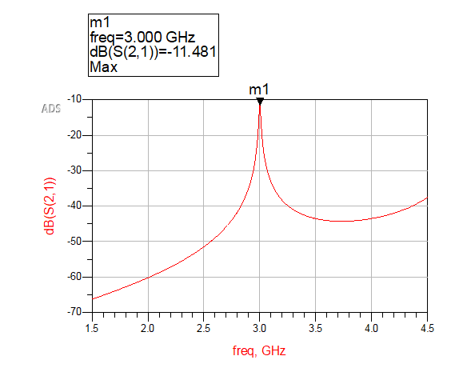
The comparison between the initial and tuned folded geometries demonstrates that the physical folding of a half-wave resonator introduces a significant shift in its electrical behavior. The circuit-level distributed model therefore requires additional geometric tuning even when the original straight resonator has already been accurately synthesized.
The resulting folded resonator establishes the nominal geometry used for the coupled-resonator analysis. Its dimensions remain fixed while the spacing between adjacent hairpins is varied to determine the coupling coefficient required by the Chebyshev synthesis.
7. Inter-Resonator Coupling Extraction
After tuning the single folded hairpin resonator to 3 GHz, the next task is to determine the physical spacing required to realize the synthesized coupling coefficient between adjacent resonators. For the third-order Chebyshev filter, the required coupling between neighboring resonators is
This section extracts that coupling from a two-resonator test structure implemented in ADS.
7.1 Two-Resonator Test Structure
The coupling study uses two identical folded hairpin resonators placed side by side. Each resonator retains the geometry established in the previous section, while the spacing between the two inner resonator arms is defined by
\(S_{23}\).
Because the vertical sections now form a four-conductor coupled system, the circuit is implemented using four ML1CTL_C transmission-line elements combined by COMBINE4ML. The four coupled arms are ordered from left to right as
Arm1, Arm2, Arm3, Arm4,
with the assigned spacings
The ordinary microstrip elements used for the feed lines, bends, base sections, and coupling gaps continue to use an MSUB definition, while the four coupled vertical arms use an MLSUBSTRATE2 definition with the same RO4350B material parameters. This mixed implementation is required because COMBINE4ML operates on the multilayer transmission-line family, whereas the bends and gaps are available in the standard microstrip model family.
Weak excitation is applied only at the two outer resonator arms through the same MGAP fixture used previously. The two inner upper arms are terminated as open circuits.
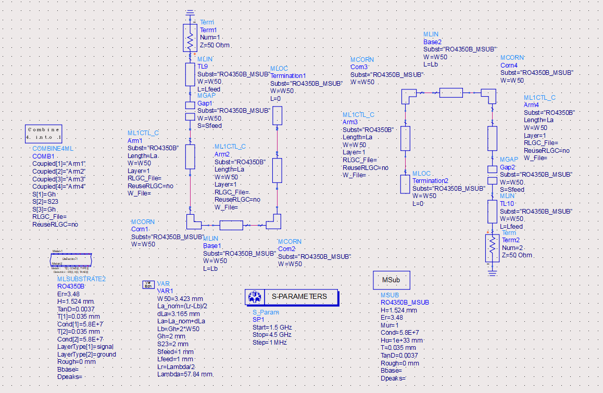
7.2 Initial Coupled-Pair Response
The first simulation uses the same arm-length correction carried over from the isolated single-resonator design. The resulting transmission response shows a split resonant pair far below the desired 3 GHz center region, with the dominant coupled modes appearing near 2.4 GHz.
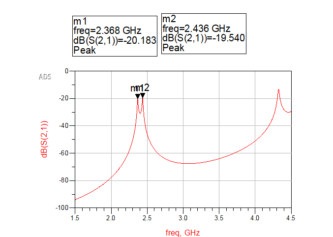
This result shows that the coupled-resonator circuit model does not preserve the exact 3 GHz center frequency obtained for the isolated folded resonator. The change arises from the different transmission-line model family and the mutual interaction introduced by the full four-conductor coupled structure.
7.3 Retuning the Coupled Pair to 3 GHz
To restore the coupled pair to the correct operating band, the arm-length correction is re-adjusted. With
the two split resonances occur at
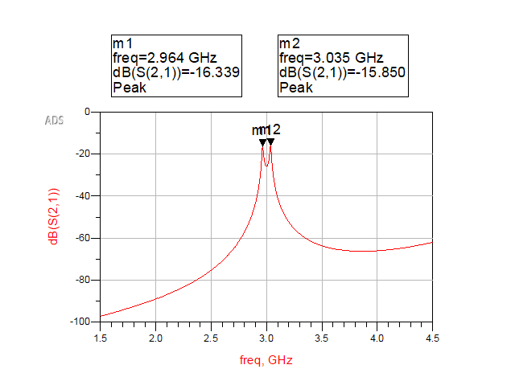
A refined adjustment gives the final coupled-pair tuning
for which the two split resonances occur at
The geometric mean center frequency is therefore
which places the coupled pair essentially at the desired design frequency.
7.4 Extraction of the Coupling Coefficient
For each value of \(S_{23}\), the two split resonances are extracted from the transmission response and used to calculate the coupling coefficient
The two resonant frequencies are identified automatically in ADS Data Display. The transmission magnitude
is first restricted to the fundamental resonance region,
2.5 GHz≤f≤3.5 GHz,
so that spurious higher-frequency peaks are excluded. The discrete slope of the response is then examined to identify local maxima. The two strongest peaks in this range are retained, and their frequencies are reordered by magnitude to define f1<f2.
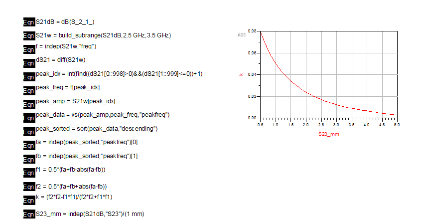
The two split resonances are detected automatically from the fundamental-mode response, and the coupling coefficient is calculated for each value of \(S_{23}\).
The resulting coarse sweep shows the expected trend:
As the resonators are moved farther apart, the mutual coupling decreases monotonically.
7.5 Fine Sweep Around the Target Coupling
The coarse sweep indicates that the desired coupling
occurs for an inter-resonator gap slightly above 0.54 mm. A finer sweep is therefore performed in the interval
0.540 mm≤\(S_{23}\)≤0.550 mm.
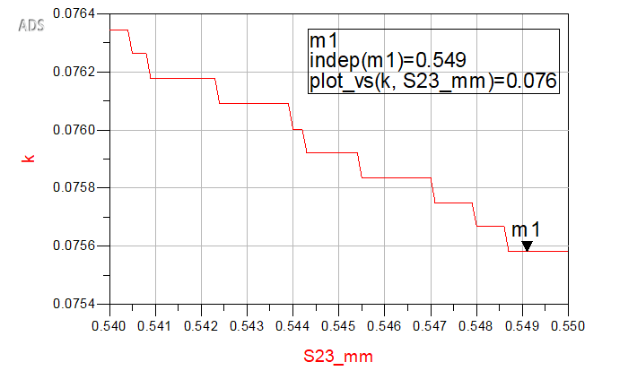
The extracted curve exhibits a staircase profile rather than a perfectly smooth variation. This is a consequence of the discrete S-parameter frequency grid used to locate the split resonances: several neighboring spacing values produce the same sampled resonance frequencies and therefore the same extracted k.
Despite this quantization, the sweep clearly identifies the correct physical spacing. The selected value is
Because the final three-pole filter is symmetric, the same spacing is assigned to both adjacent resonator pairs:
7.6 Final Verification of the Coupling
A final simulation at the selected spacing gives the split resonant frequencies
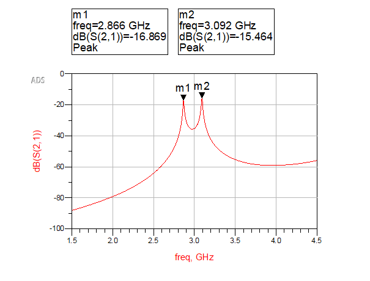
Using these two frequencies gives
This value agrees very closely with the synthesis target
The coupled-pair center frequency is
which is slightly lower than 3 GHz. At this stage, the coupling gap is kept fixed because it accurately realizes the required coupling coefficient. Any small residual center-frequency shift is corrected later by a common resonator-length adjustment after the complete three-resonator filter is assembled.
The coupling-extraction procedure therefore establishes the physical adjacent-resonator spacing
which is used in the final filter implementation.
8. External Quality Factor Extraction and Tap Position Selection
After determining the required inter-resonator coupling coefficients, the next step was to design the input and output coupling. For the synthesized third-order Chebyshev response, the required external quality factor was
A tapped-feed configuration was used to control the coupling between the 50 Ω feed line and the end resonators. The external quality factor was determined from a single-resonator, one-port model before incorporating the feed structure into the complete three-resonator filter.
The tapped resonator model is shown in Figure 8.1. The feed line is connected to one side of the hairpin through a microstrip tee. To allow the tap position to be varied without changing the total electrical length of the resonator, each vertical coupled-line section is divided into two parts. The lower section has a length \(L_t\), while the upper section has a length \(L_{a,Qe}-L_t\). Therefore,
and changing \(L_t\) moves the tap point along the arm while keeping the total resonator length constant.
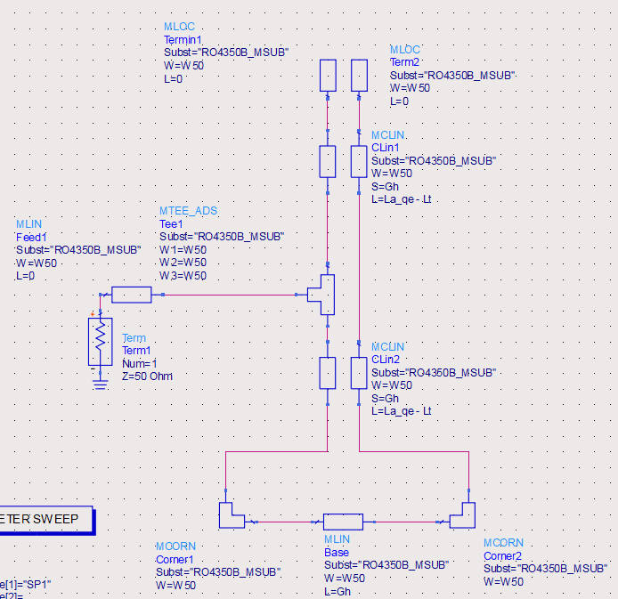
Because the addition of the tapped-feed structure altered the resonant behavior of the single resonator, the arm length was retuned before extracting the external quality factor. A separate correction variable, \(dL_{a,Qe}\), was used for this purpose.
The resonant frequency was monitored while \(dL_{a,Qe}\) was swept. The resulting tuning curve is shown in Figure 8.2. As the resonator arm length increased, the resonant frequency decreased, as expected from the increased electrical length. A correction of
produced a resonant frequency of
which was sufficiently close to the 3 GHz design frequency.
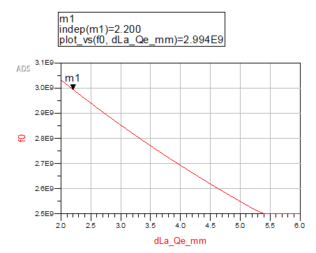
The value
was therefore fixed for the external quality factor sweep.
The external quality factor was extracted using the reflection group delay of the one-port resonator. For a singly coupled resonator, the external quality factor can be related to the group delay of \(S_{11}\) at resonance by
where τ11 is the reflection group delay.
ADS was configured to calculate the group delay directly using delay(1,1). To prevent unrelated resonances outside the design band from affecting the extraction, the group-delay data was restricted to the range
2.5 GHz≤f≤3.5 GHz.
The corresponding ADS expressions were
and
The tap position Lt was then swept while all other resonator dimensions were held fixed. The resulting \(Q_e\) curve is shown in Figure 8.3.
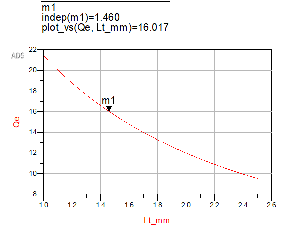
The required value,
was reached very closely at
At this position, ADS produced
The relative deviation from the synthesized target was
This agreement was considered sufficiently close for the filter implementation, and the final tap position was therefore selected as
As a final verification, the reflection group delay was examined at the selected resonator dimensions and tap position. The response is shown in Figure 8.4. A pronounced group-delay peak occurs close to the intended 3 GHz resonance, confirming that the external-Q extraction is associated with the desired fundamental resonator mode.
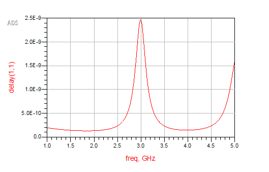
The final parameters obtained from the external quality factor design were therefore
and
These values were subsequently used for the input and output coupling structures in the complete three-resonator hairpin bandpass filter.
9. Full-Filter Layout and Momentum EM Simulation
After the individual resonator geometry, inter-resonator coupling, and external quality factor had been determined, the complete three-resonator filter was assembled. An initial attempt was made to construct the complete filter using distributed schematic elements. The individual resonator, coupling-coefficient, and external-Q extraction models had each behaved correctly; however, extending the same approach to the complete filter required simultaneous coupling among six parallel resonator arms.
Several schematic representations were investigated, including a six-conductor coupled-line model and overlapping pairwise COMBINE2ML models. Although these circuits could be simulated, they did not reproduce a physically meaningful three-resonator response. In particular, the complete schematic exhibited very weak transmission and showed insufficient sensitivity to changes in the nominal inter-resonator spacing. The schematic representation was therefore not used for final filter verification.
Instead, the complete physical filter was implemented directly in ADS Layout and analyzed using Momentum. This allowed the electromagnetic interaction among all three resonators, the feed discontinuities, fringing fields, and non-nearest-neighbor coupling to be included directly in the solution.
9.1 Full-Filter Layout
The complete filter layout is shown in Figure 9.1. Three hairpin resonators were arranged with alternating orientation, with the first and third resonators closed at the bottom and the center resonator closed at the top. The alternating geometry allowed the adjacent vertical arms to remain parallel over most of their length while maintaining a compact overall structure.
The initial physical dimensions were transferred from the preceding circuit-level extraction stages. The microstrip width and internal hairpin spacing were
and
The initial inter-resonator gaps were based on the coupling-coefficient extraction,
while the input and output feeds used the previously extracted tap position,
The input and output feed lines were both 50-Ω microstrip lines and Momentum ports were placed at their outer edges.
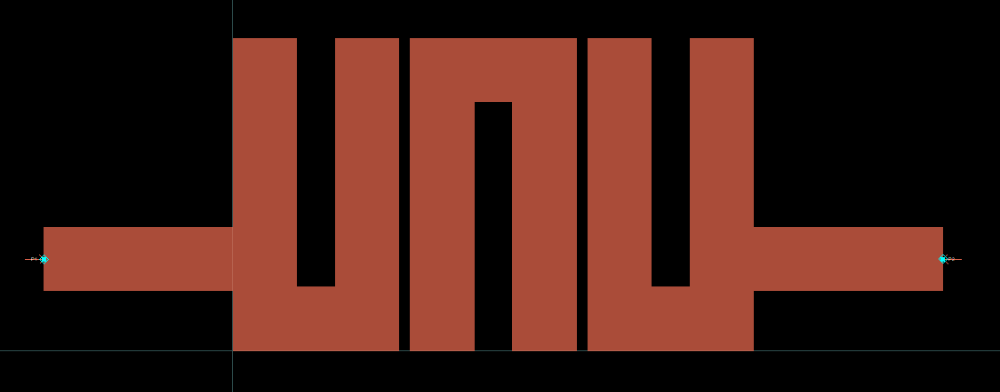
9.2 Momentum Substrate Definition
The Momentum substrate model is shown in Figure 9.2. The filter was implemented on Rogers RO4350B with the same material parameters used throughout the earlier circuit-level design:
and
The top conductor was modeled as copper with a thickness of
while the lower boundary was defined as a continuous ground conductor. The region above the microstrip structure was defined as air.
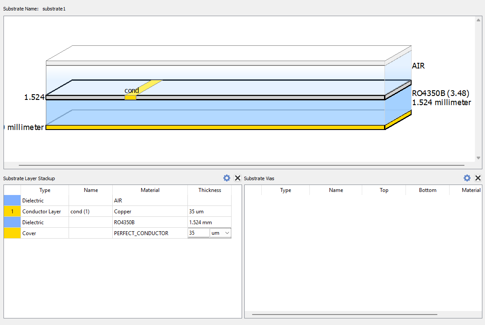
9.3 Initial Momentum Response
The first Momentum simulation was performed over a broad frequency range in order to verify the overall behavior of the physical filter. The resulting \(S_{11}\) and \(S_{21}\) responses are shown in Figure 9.3.
Unlike the complete schematic-level model, the Momentum simulation immediately produced a clear transmission band with low insertion loss and a corresponding return-loss minimum. This confirmed that the physical resonator arrangement and electromagnetic coupling mechanism were functioning correctly. The initial passband, however, was shifted below the 3 GHz design frequency.
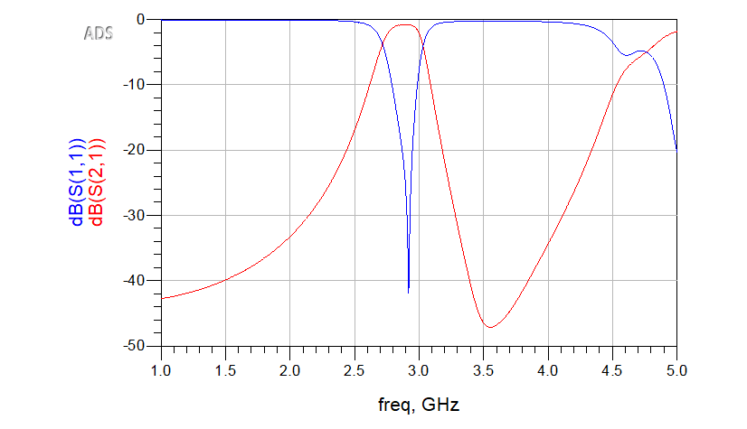
A narrower simulation was then used to characterize the initial passband more accurately. The result is shown in Figure 9.4. The maximum transmission occurred at
with
The corresponding return-loss minimum was
at the same frequency.
The frequencies approximately 3 dB below the transmission maximum were
and
This produced an initial bandwidth of
The center frequency obtained from the two band edges was
corresponding to a fractional bandwidth of approximately
The bandwidth was already reasonably close to the 10% design objective, but the entire passband was displaced downward by approximately 180 MHz.
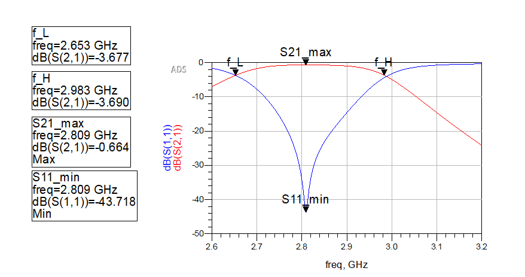
9.4 Resonator-Length Retuning
Since the initial bandwidth and matching were already acceptable, the first EM tuning step was limited to the resonator length. The coupling gaps and feed-tap locations were held constant while the straight arm length \(L_a\) was reduced in order to shift the resonance upward.
The initial EM resonator arm length was
A first correction reduced the arm length to
The corresponding response is shown in Figure 9.5. The transmission maximum shifted upward to
while the insertion loss remained low at approximately
0.684 dB.
The 3-dB frequencies were
and
indicating that shortening the resonators shifted the entire passband upward while leaving the bandwidth almost unchanged.
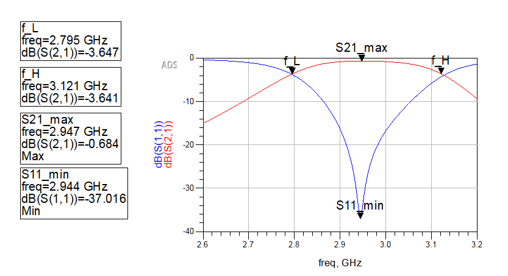
A second, smaller correction reduced the arm length to
The resulting response is shown in Figure 9.6. The transmission maximum moved to
with
The minimum return loss occurred at approximately
3.005 GHz
with
The 3-dB frequencies were
and
corresponding to a bandwidth of approximately
325 MHz.
At this point the center-frequency error had effectively been removed, and the resonator length was fixed at
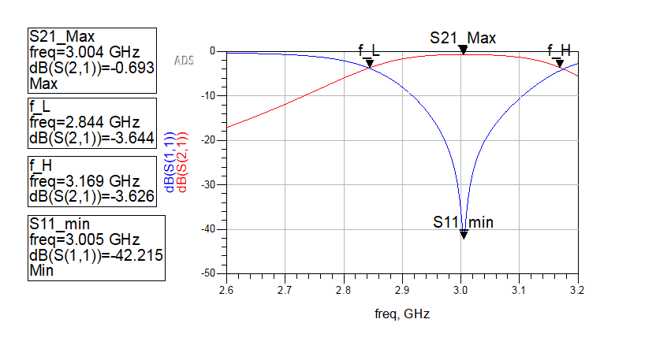
9.5 Final Inter-Resonator Coupling Adjustment
After correcting the center frequency, the remaining bandwidth was slightly larger than the desired 300 MHz. The inter-resonator coupling was therefore reduced by increasing both physical coupling gaps from
0.549 mm
to
All other dimensions, including the tuned resonator length and feed-tap location, were held constant.
The final Momentum response is shown in Figure 9.7. The measured band edges were
and
The resulting bandwidth was therefore
The center frequency calculated from the band edges was
which differs from the 3 GHz design target by only approximately
2.5 MHz.
The final fractional bandwidth was
The maximum simulated transmission was
at approximately
3.070 GHz,
while the minimum input reflection coefficient was
at approximately
3.075 GHz.
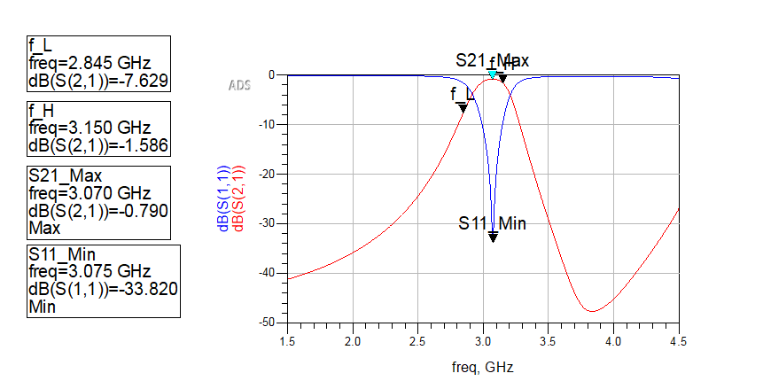
The final physical design parameters used in the Momentum model were therefore
and
The full-wave Momentum simulation therefore verified that the synthesized coupled-resonator design could be translated into a practical microstrip geometry with a center frequency essentially equal to 3 GHz, approximately 10% fractional bandwidth, less than 1 dB simulated insertion loss, and better than 30 dB return loss near the center of the passband. These dimensions were subsequently used as the basis for independent full-wave verification in HFSS.
10. HFSS Full-Wave Validation
10.1 HFSS Model Construction
10.2 HFSS Simulation Results
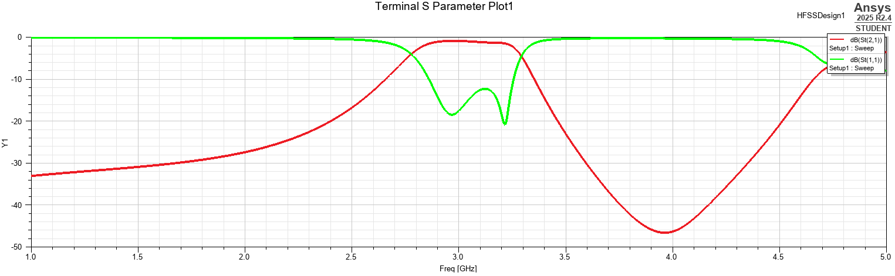
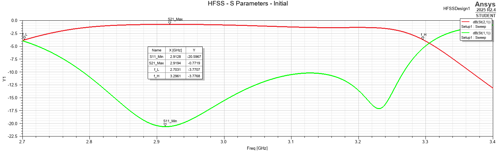
Therefore,
and
Thus,
10.3 Momentum–HFSS Comparison
| Quantity | Momentum | HFSS |
|---|---|---|
| Band-edge center | 2.9975 GHz | 2.9996 GHz |
| Peak \(S_{21}\) | -0.790 dB | -0.772 dB |
| Minimum \(S_{11}\) | -33.82 dB | -20.60 dB |
| 3-dB bandwidth | 305 MHz | 593 MHz |
| \(FBW\) | 10.17% | 19.77% |
11. Final Comparison and Discussion
The completed hairpin bandpass filter was developed through a sequence of circuit-level synthesis, resonator tuning, coupling extraction, external-Q extraction, and full-wave electromagnetic verification. The final design retained the synthesized third-order Chebyshev topology and was implemented on Rogers RO4350B with a 3 GHz center-frequency target and approximately 10% fractional bandwidth.
The final Momentum model provided the primary physical design result. After tuning the resonator arm length and slightly increasing the inter-resonator spacing, the filter achieved a band-edge center frequency of approximately
with a 3-dB bandwidth of
corresponding to a fractional bandwidth of
The simulated peak transmission was approximately
while the minimum input reflection was approximately
These results closely matched the original design objectives and confirmed that the synthesized coupling coefficients and external loading could be translated into a practical planar microstrip geometry after full-wave tuning.
An independent HFSS model was then constructed using the same final physical dimensions. HFSS predicted a band-edge center frequency of approximately
and a peak transmission of
These values agreed extremely well with the Momentum prediction, particularly in center frequency and insertion loss. HFSS also predicted a minimum reflection coefficient of approximately
indicating that the filter remained well matched in the full 3D model.
The most significant difference between the two electromagnetic solvers was the predicted bandwidth. Momentum produced a 3-dB bandwidth of approximately 305 MHz, while HFSS predicted approximately 593 MHz. The corresponding fractional bandwidths were approximately 10.17% and 19.77%, respectively. This indicates that HFSS predicted substantially stronger effective coupling between the resonators than Momentum.
Several modeling differences can contribute to this discrepancy. Momentum solves the structure using a planar electromagnetic formulation based on the specified substrate stackup, whereas HFSS solves the full three-dimensional field distribution. The HFSS model also included finite substrate and ground-plane dimensions, explicit conductor thickness, finite air volume, radiation boundaries, and lumped-port excitation geometry. These differences can alter fringing fields, resonator loading, and mutual coupling, particularly in a compact structure containing several closely spaced resonators.
A complete schematic-level model of the three-resonator filter was also investigated before the Momentum implementation. The individual resonator, coupling-coefficient, and external-Q extraction models behaved correctly, but the full schematic model required simultaneous interaction among six adjacent resonator arms. Attempts to represent this behavior using multi-conductor and overlapping pairwise coupled-line elements did not produce a physically meaningful complete-filter response. The full-wave Momentum model was therefore used for final geometric tuning instead.
The final physical dimensions were
and
Overall, the design process demonstrated that circuit-level synthesis provides an effective starting point for the filter geometry, but full-wave electromagnetic tuning is required to obtain the final physical dimensions. Momentum reproduced the intended 3 GHz, 10% bandwidth response closely, while HFSS independently confirmed the center frequency and low insertion loss and highlighted the sensitivity of the predicted bandwidth to the electromagnetic modeling approach.